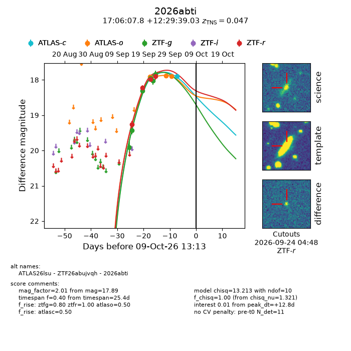
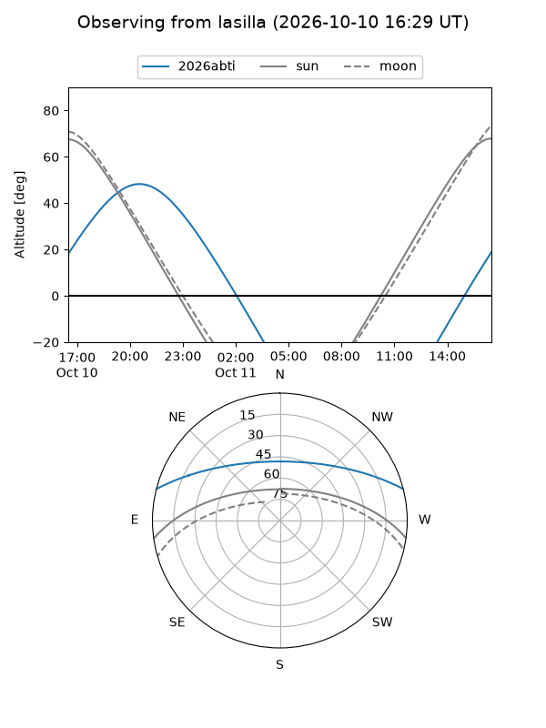
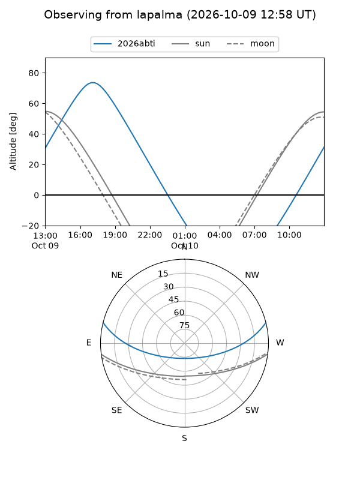
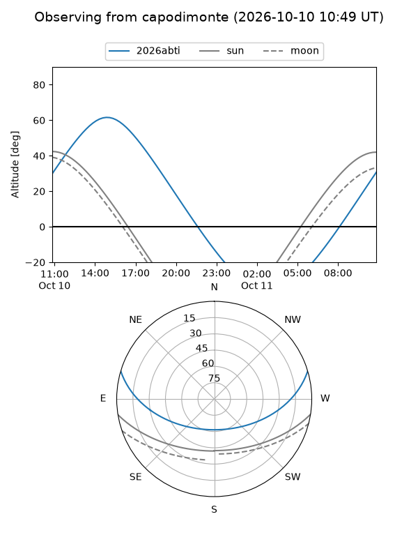
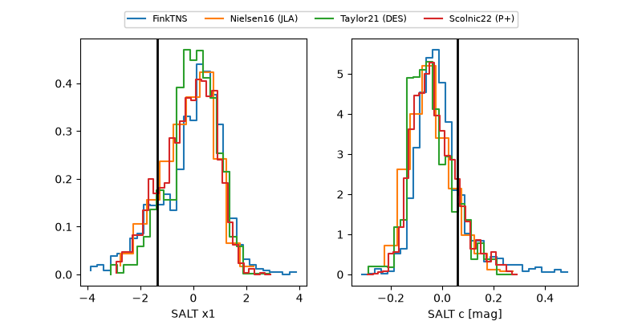

2026abti
Target 2026abti at 2026-10-09 13:15
Aliases and brokers:
FINK-ZTF: ztf.fink-portal.org/ZTF26abujvqh
Lasair-ZTF: lasair-ztf.lsst.ac.uk/objects/ZTF26abujvqh
ALeRCE-ZTF: alerce.online/object/ZTF26abujvqh
YSE-PZ: ziggy.ucolick.org/yse/transient_detail/2026abti
TNS name: wis-tns.org/object/2026abti
Direct TNS query: direct search
alt names
ZTF26abujvqh (ztf,fink_ztf)
2026abti (tns,yse)
ATLAS26lsu (atlas)
Coordinates:
equatorial (ra, dec) = 256.5326,+12.49418
equatorial (HMS+DMS) = 17:06:07.82,+12:29:39.03
galactic (l, b) = (32.6114,+28.94717)
Flags:
TNS type: SN Ia
TNS redshift: 0.0470
peak dt: +12.8
Photometry:
last atlasc=17.89, atlaso=17.89, ztfg=17.84, ztfr=17.90
1 atlasc, 3 atlaso, 6 ztfg, 4 ztfr detections
Lightcurve

Visibility



Additional plots
